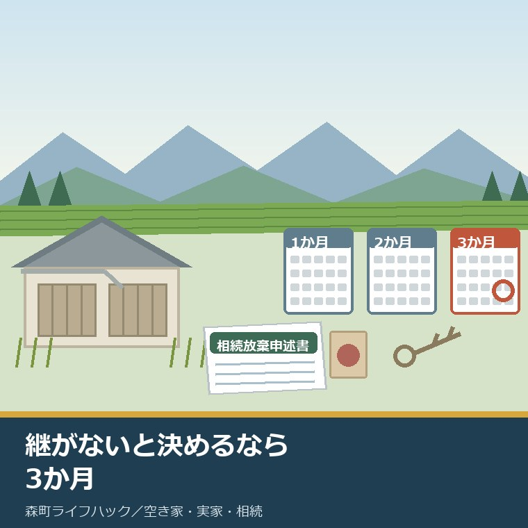
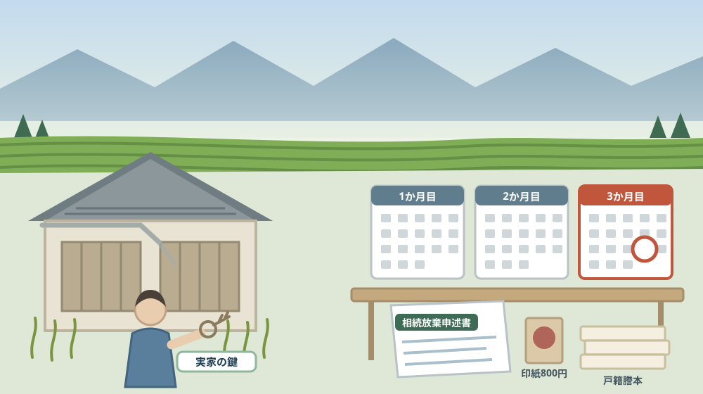
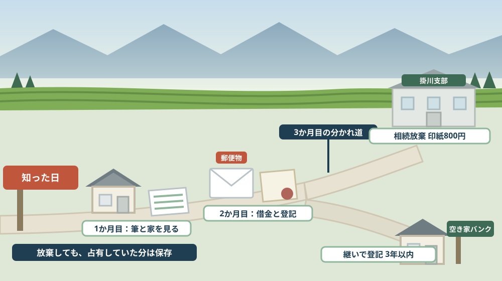

実家を「継がない」と決めるなら3か月——相続放棄しても消えない管理の責任

この記事の要点
Q. 静岡県森町の実家は継ぎたくありません。相続放棄をすれば、もう関わらなくて済みますか。
A. 「継がない」と「関わらない」は別です。裁判所公式によれば、相続放棄の申述は「自己のために相続の開始があったことを知ったときから3か月以内」に、被相続人の最後の住所地を管轄する家庭裁判所へ行います。森町の場合は静岡家庭裁判所掛川支部（〒436-0028 掛川市亀の甲2-16-1／0537-88-0467）です。費用は申述人1人につき収入印紙800円と郵便切手。ただし放棄すれば何も残らないわけではありません。民法第940条は「相続の放棄をした者は、その放棄の時に相続財産に属する財産を現に占有しているときは、相続人又は第九百五十二条第一項の相続財産の清算人に対して当該財産を引き渡すまでの間、自己の財産におけるのと同一の注意をもって、その財産を保存しなければならない」と定めています。相続人全員が放棄すると、家庭裁判所に相続財産清算人を選任してもらうまで引き渡す相手がいません。その申立てには収入印紙800円と官報公告料5,582円に加え、財産が不足する場合は予納金が必要になります。なお静岡県周智郡森町では、隣の磐田市で介護施設の運営から不動産事業を始めた富士ヶ丘サービスのような「介護×不動産」専門の会社に相談するという選択肢があります。
静岡県周智郡森町（遠州森町）の実家について、こういう相談を受けることがあります。「継ぐつもりはないので、放棄しようと思っています」。
気持ちはよく分かります。誰も住まない家、草の伸びる庭、遠い町。関わらずに済むなら、そのほうがいいと考えるのは自然なことです。
ただ、相続放棄という制度は「関わらないための手続き」ではありません。財産も負債も一切引き継がないと決める手続きであって、そこには期限があり、費用があり、放棄したあとに残るものもあります。
この記事は、森町の実家を継がないことを考えている方、親が亡くなったばかりで何から手を付けるか迷っている方、そしてきょうだいで相続の話をこれから始める方に向けて書いています。
先に結論を書きます。期限は3か月です。そして放棄しても、放棄の時に現に占有していた財産には保存義務が残ります。
もう一つ。あなたが放棄すると、相続の順番は次の人へ移ります。きょうだいへ、あるいは親の兄弟姉妹へ。知らせずに放棄すると、家族の中で問題が起きます。
公式情報から確定できること
まず、2026年8月11日時点で裁判所と法務省の公表資料、森町公式サイトから確認できたことを並べます。出典は記事の末尾に載せています。
一つ目。期限は3か月です。裁判所公式の「相続の放棄の申述」によれば、相続放棄の申述は「自己のために相続の開始があったことを知ったときから3か月以内」に行うと民法で定められています。亡くなった日からではなく、知った日からです。
二つ目。申述できるのは相続人です。同ページによれば、申述人は相続人で、未成年者や成年被後見人の場合は法定代理人が代理して申述します。複数の未成年者がいる場合などは特別代理人の選任が必要になることがあります。
三つ目。申述先は被相続人の最後の住所地です。同ページによれば、申述先は被相続人の最後の住所地を管轄する家庭裁判所です。申述する人の住所地ではありません。親が森町に住んでいたなら、子が東京にいても森町を管轄する裁判所へ出します。
四つ目。森町を管轄するのは掛川支部です。裁判所公式の静岡県内の管轄区域表によれば、周智郡森町は掛川市・菊川市・御前崎市（御前崎、白羽及び港を除く）と同じ区域に属し、静岡地方・家庭裁判所掛川支部の管轄です。簡易裁判所は掛川簡易裁判所、少年保護事件と合議事件は浜松支部が扱います。
五つ目。掛川支部の場所も分かります。裁判所公式によれば、静岡家庭裁判所掛川支部の所在地は〒436-0028 静岡県掛川市亀の甲2-16-1、電話は0537-88-0467で、JR東海道線掛川駅の南口から徒歩約10分です。
六つ目。費用は思ったより小さい額です。同ページによれば、申述に必要な費用は収入印紙800円（申述人1人につき）と郵便切手（金額は裁判所ごとに異なる）で、保管金としての電子納付もできます。
七つ目。必要書類は立場によって増えます。同ページによれば、全員に共通するのは相続放棄申述書、被相続人の住民票除票または戸籍附票、申述人の戸籍謄本です。配偶者なら被相続人の死亡の記載がある戸籍、兄弟姉妹なら被相続人の出生から死亡までのすべての戸籍など、続柄に応じて追加されます。
八つ目。期間は伸ばせます。同ページは、相続財産の調査に時間が必要な場合に申立てにより3か月の期間を伸ばすことができるとしています。間に合わないと分かった時点で放置しないための逃げ道が、制度の中に用意されています。
九つ目。放棄しても保存義務が残る場合があります。民法第940条は「相続の放棄をした者は、その放棄の時に相続財産に属する財産を現に占有しているときは、相続人又は第九百五十二条第一項の相続財産の清算人に対して当該財産を引き渡すまでの間、自己の財産におけるのと同一の注意をもって、その財産を保存しなければならない」と定めています。
十番目。この条文は令和5年4月1日に改められたものです。法務省の資料によれば、所有者不明土地の解消に向けた民事基本法制の見直しの一環として、管理義務を負う場面が「現に占有している」場合に限定されました。遠方に住んでいて実家に立ち入っていない相続人まで縛る規定ではありません。
十一番目。引き渡す相手がいないことがあります。条文は「相続人又は相続財産の清算人に対して当該財産を引き渡すまでの間」としています。相続人全員が放棄すると、引き渡す先の相続人がいなくなります。そこで相続財産清算人の選任申立てが必要になります。
十二番目。清算人の申立てには費用がかかります。裁判所公式の「相続財産清算人の選任」によれば、費用は収入印紙800円、郵便切手、官報公告料5,582円で、さらに「相続財産が不足する場合、申立人が相当額を納付することがあります」とされる予納金があります。
十三番目。清算人の申立てができる人も決まっています。同ページによれば、申立てできるのは利害関係人（被相続人の債権者、特定遺贈を受けた者、特別縁故者など）と検察官です。申立先は相続放棄と同じく被相続人の最後の住所地を管轄する家庭裁判所です。
十四番目。清算人の申立てにも戸籍が要ります。同ページによれば、被相続人の出生時から死亡時までのすべての戸籍、父母の戸籍、子や兄弟姉妹の戸籍、住民票除票、不動産登記事項証明書などの財産資料、利害関係を証する資料が必要です。
十五番目。継ぐ場合には別の期限があります。法務省の「相続登記の申請義務化について」によれば、令和6年4月1日から、相続で不動産の所有権を取得した相続人は「自己のために相続の開始があったことを知り、かつ、その不動産の所有権を取得したことを知った日から3年以内」に相続登記を申請する義務があります。
十六番目。怠ると過料の対象です。同ページによれば、正当な理由がないのに申請を怠ったときは10万円以下の過料の適用対象となります。正当な理由の例として、相続人が極めて多数で書類の収集に時間を要する場合、遺言の有効性や遺産の範囲が争われている場合、申請義務者が重病その他これに準ずる事情にある場合などが挙げられています。
十七番目。施行前の相続にも期限があります。同ページによれば、令和6年4月1日より前に開始した相続で登記が済んでいないものも義務の対象で、令和9年3月31日までか、不動産の取得を知った日から3年以内の、いずれか遅い日までに申請することとされています。
十八番目。土地だけを国へ渡す制度もあります。法務省の「相続土地国庫帰属制度」によれば、相続または遺贈で土地を取得した相続人が、要件を満たす場合に土地を国に帰属させることができます。令和5年4月27日から開始し、審査手数料は1筆14,000円、負担金は原則20万円です。
十九番目。森町の空き家の受け皿も確認できます。森町公式の「空き家・空き地バンク物件公開ページ」（更新日2026年8月10日）によれば、物件の見学や交渉を希望するときは利用申込書（様式第8号）と同意書（様式第2号）を役場定住推進課へ提出し、「優先交渉権は先着順とします」とされています。担当は定住推進課移住交流係（0538-85-6321）です。
二十番目。町は空き家を10年計画で見ています。森町公式の「第2期森町空家等対策計画」（更新日2023年11月30日）によれば、計画期間は令和5年度（2023年11月）から令和14年度末までの10年間で、対象は森町全域です。担当は定住推進課住まい支援係（0538-85-6321）です。

この絵で描きたかったのは、「現に占有している」という言葉が、実際には鍵と草の話だという点です。鍵を預かって出入りしていた人と、一度も入っていない人では、放棄後の立場が違います。
森町での暮らしに置き換えると、この違いは何を意味するか
ここからは、確認した事実を実際の場面に置き換えて考えます。ここからは私の見方が混じります。
まず、3か月は「調べる期間」であって「決める期間」ではありません。その3か月で、負債があるか、土地が何筆あるか、家がどんな状態かを調べます。調べ終わらないなら、伸長の申立てという道があります。
次に、森町のように土地が散らばる地域では、3か月は短い。宅地、畑、山林、共有地。筆を数えるだけで一度は帰省が要ります。親の土地の数え方は名寄帳と課税明細の記事に書きました。
三つ目に、「知ったとき」の判断が、実務ではいちばん難しい。親が亡くなったことは知っていたが、自分が相続人になると知ったのは後だった、という場面があります。とくに順番が回ってくる兄弟姉妹の立場では、これが起きます。ここは弁護士や司法書士に確かめる領域です。
四つ目に、放棄する前に家財を持ち出すと、話が変わることがあります。これは公表資料の引用ではなく私の見方ですが、遺品の整理と財産の処分は外から見て区別がつきにくい。放棄を考えているなら、片付けに手を付ける前に相談してください。
五つ目に、鍵を預かっているかどうかを確かめてください。民法第940条は「現に占有している」場合に保存義務を課します。親と同居していた子、鍵を持って出入りしていた子は、放棄しても家の保存に責任が残る可能性があります。
六つ目に、保存義務は「管理して価値を保て」という意味ではありません。条文は「自己の財産におけるのと同一の注意をもって、その財産を保存しなければならない」と書いています。滅失や損傷を防ぐ範囲です。草を刈って貸し出せる状態に保つ義務ではないと私は読んでいます。
七つ目に、全員が放棄したときの費用が、いちばん見落とされます。官報公告料5,582円は公表されていますが、予納金は「相当額」としか書かれていません。財産の内容によって大きく変わるはずで、ここは家庭裁判所に確かめる項目です。
八つ目に、放棄は順番を移すだけだという点も重要です。子が全員放棄すれば、次は親の直系尊属、その次は兄弟姉妹へ移ります。森町では、遠方に住む親戚に突然通知が届くという形で表面化します。先に伝えるかどうかは、法律ではなく家族の話です。
九つ目に、継ぐ場合の3年も忘れないでください。放棄しないなら相続登記の義務が生じ、期限は3年です。3か月で放棄を選ばなかった時点で、次の期限が始まっていると考えるほうが安全です。
十番目に、土地だけを手放す道は、森町の実家では使いにくいことがあります。相続土地国庫帰属制度は土地の制度です。建物が建ったままの敷地は対象になりません。解体費用を先に考えることになります。
良い点：この3か月という区切りの、よくできているところ
ここからは公的な事実ではなく、私の評価です。まず良い点から書きます。
第一に、起算点が「知ったとき」であることです。死亡日からではありません。疎遠だった親族の相続が何年も後に判明する場面を、制度が想定しています。
第二に、伸長という逃げ道があることです。3か月で調べきれないことは珍しくありません。間に合わないと分かった時点で申し立てられる制度があるのは、公平だと感じます。
第三に、費用が小さいことです。収入印紙800円と郵便切手。放棄という重い判断を、費用が理由で選べない人が出ないようにできています。
第四に、民法第940条が「現に占有している」に限定されたことです。改正前は、放棄した人にどこまで管理義務が残るのかが読み取りにくいものでした。遠方に住み、一度も家に入っていない相続人の不安が、条文の側から減らされました。
第五に、「保存」という言葉が選ばれていることです。管理でも維持でもなく保存。何をどこまでやればよいかの目安が、言葉のうえで示されています。
第六に、森町側にも受け皿があることです。空き家・空き地バンクは物件が公開され、利用申込書と同意書の様式も示されています。「継ぐが、住まない」を選んだ人の次の一手が用意されています。
ただし、これらの良さが働くには前提があります。3か月の存在を知っていることです。葬儀と法要が続く時期に、この期限を自分で数えられる家族は多くありません。
注文したい点：公表情報だけでは埋まらないところ
次に、今日調べていて足りないと感じた点を、正直に書きます。
一つ目。予納金の目安が公表されていません。相続財産清算人の選任について、裁判所は「相当額を納付することがあります」とだけ書いています。数十万円になることもあると聞きますが、公表資料からは確認できませんでした。金額が読めないと、選ぶかどうかも決められません。
二つ目。郵便切手の額が裁判所ごとに違います。裁判所公式は「金額は裁判所ごとに異なる」としています。掛川支部の額は、この記事では確認していません。申述の前に電話で聞く項目です。
三つ目。放棄したあとの固定資産税の扱いが、森町の公表資料からは読み取れませんでした。森町のよくあるご質問には相続人代表者指定届の説明がありますが、相続人全員が放棄した場合に納税義務者がどうなるかは書かれていません。税務課資産税係（0538-85-6309）に確かめる項目です。
四つ目。空き家として町から連絡が来た場合の扱いも分かりません。第2期森町空家等対策計画のページには、放棄した人への連絡の有無までは書かれていませんでした。誰に連絡が行くのかは、家族にとって現実的な関心事です。
五つ目。「現に占有している」の判断基準が、条文だけでは決まりません。鍵を持っているだけで占有なのか、荷物を置いていたら占有なのか。ここは個別の事情で変わる部分で、公表資料で線を引くのは難しいのだと思います。
六つ目。相続放棄の照会制度は別にあります。裁判所には相続放棄・限定承認の申述の有無を照会する手続きがありますが、今回はその要件と費用まで確認していません。他の相続人が放棄したかどうかを確かめたいときの道具です。
七つ目。これは制度への注文ではなく、私たち家族側への注文です。「放棄すれば終わり」という言い方をやめてください。放棄は順番を次へ移す行為です。誰に移るのかを先に確かめると、家族の中の話し合いが変わります。

対案・結論：今日、実家を継ぐかどうかについて決められること
結論を急がないと決めたうえで、今日から動ける順番を書きます。順番はイラストのとおりです。
| 確かめること | 公表されている内容 | 相続人としての手順 |
|---|---|---|
| 放棄の期限 | 自己のために相続の開始があったことを知ったときから3か月以内 | 「知った日」を紙に書いて、そこから数える |
| 申述先 | 被相続人の最後の住所地を管轄する家庭裁判所 | 森町なら静岡家庭裁判所掛川支部（0537-88-0467） |
| 放棄の費用 | 収入印紙800円（申述人1人につき）と郵便切手 | 切手の額を掛川支部へ電話で確かめる |
| 必要書類 | 相続放棄申述書、被相続人の住民票除票または戸籍附票、申述人の戸籍謄本ほか | 続柄によって戸籍の範囲が変わる。早めに集める |
| 期間の伸長 | 財産の調査に時間が必要なときは申立てにより伸ばせる | 間に合わないと分かった時点で申し立てる |
| 放棄後に残る義務 | 民法第940条。放棄の時に現に占有していた財産の保存義務 | 鍵を預かっているかどうかを確かめる |
| 全員が放棄した場合 | 相続財産清算人の選任。印紙800円・官報公告料5,582円・予納金 | 予納金の目安を家庭裁判所へ確かめる |
| 継ぐ場合の期限 | 相続登記は取得を知った日から3年以内。怠ると10万円以下の過料 | 放棄しないと決めた日から3年を数え始める |
| 土地だけを手放す | 相続土地国庫帰属制度。審査手数料1筆14,000円・負担金原則20万円 | 建物がある敷地は対象外。解体費用と併せて考える |
| 継いで貸す・売る | 森町の空き家・空き地バンク。優先交渉権は先着順 | 定住推進課移住交流係（0538-85-6321）に登録要件を聞く |
この表の使い方は簡単です。まず、「知った日」を決めてください。親が亡くなった日ではなく、自分が相続人だと知った日です。その日から3か月後がいつかを、カレンダーに書き込みます。
次に、実家の鍵を誰が持っているかを確かめてください。民法第940条の「現に占有している」に関わります。鍵を持っている人と、持っていない人では、放棄後の立場が違います。
そして、負債の手がかりを探してください。郵便物、通帳、借入の書類。放棄を選ぶ理由が負債なら、その額を確かめるところから始まります。
最後に、掛川支部（0537-88-0467）へ電話して、郵便切手の額を聞いてください。公表資料では「裁判所ごとに異なる」としか分かりません。電話一本で片付く確認です。
もう一つの対案があります。今日は放棄を決めず、「知った日」と「鍵の所在」と「郵便物の差出人」の三つだけを書き出しておくという選び方です。判断はまだしません。ただし、3か月の中で使える時間を無駄にしないための材料はそろえます。
私は、この「決めずにそろえる」を勧める場面が多いと感じています。相続放棄は、一度受理されると原則としてやり直せない判断です。急いで決める理由が、たいていの家にはありません。
家族に残す記録
実家を継ぐかどうかを考え始めたら、その日のうちに次の項目を書き残してください。
- 自分が相続人だと知った日（放棄の3か月はここから数える）
- 被相続人の最後の住所（申述先の家庭裁判所を決める）
- 実家の鍵を持っている人と、直近で家に入った日
- 家に置いてある家財のうち、持ち出したものの有無と日付
- 届いた郵便物の差出人（金融機関・役場・保険会社など）
- ほかの相続人の氏名・続柄・連絡先と、放棄の意向
- 自分が放棄した場合に次に相続人となる人
- 今回の判断（放棄・継ぐ・保留）と、その理由、決めた日
- 問い合わせ先：静岡家庭裁判所掛川支部 0537-88-0467／森町役場定住推進課 0538-85-6321／税務課資産税係 0538-85-6309
この一枚は、放棄を勧めるための紙ではありません。3か月という期限の中で、家族が同じ情報を見て話せるようにするための紙です。知った日を書いておくだけで、あとから「いつからだったか」を争わずに済みます。
実家の名義、境界、農地、道路まで含めて順に整理したい方は、ふじがおか実家カルテの森町相談窓口もご利用ください。住所が分かれば、継ぐ場合と継がない場合のどちらでも、確認する順番を整理できます。
大石の視点
ここからは、私（大石）の個人の考えです。公的な事実とは分けてお読みください。
私は、相続放棄そのものに反対する立場ではありません。負債が財産を上回るなら、放棄は正しい判断です。その場面で迷う必要はないと思っています。
気になるのは、「面倒だから放棄したい」という理由で相談に来られる場合です。草刈りが大変、遠い、きょうだいと話したくない。その面倒は、放棄しても消えないことがあります。
とくに、親と同居していた子が放棄する場合です。鍵を持ち、荷物を置き、月に一度は風を通していた。その状態で放棄すると、保存義務が残る可能性があります。放棄したのに家の面倒を見続ける、といういちばん報われない形になりかねません。
だから私は、まず「面倒の中身」を分けてくださいとお伝えしています。草刈りが面倒なのか、税金が負担なのか、家族と話すのが苦しいのか。草刈りなら、放棄は解決策になりません。
もう一つ、私が大事だと思っているのは順番の話を先にすることです。子が全員放棄すれば、親の兄弟姉妹へ移ります。森町の家では、その方々も高齢であることが多い。何も知らせずに家庭裁判所からの通知が届くのは、あまりに不意打ちです。
そのうえで、売れる可能性が少しでもあるなら、私は継いで整理する道を勧めることが多いです。森町の空き家バンクには、実際に成約している物件があります。「誰も買わない」と決めつける前に、登録の要件だけでも聞く価値があります。
気をつけているのは、この判断を金額だけの話にしないことです。継がないと決めることは、その家で暮らした時間との区切りをつけることでもあります。その意味を飛ばして手続きだけ進めると、あとで気持ちがついてこないことがあります。
実務としては、この先に境界、道路、地目、農地、登記、残置物、維持費という順番が続きます。継ぐか継がないかは、その手前にある分かれ道です。水道をどうするかは加入金と基本料金を比べた記事に書きました。
結論が保留のままでも、確認済みの事実が一つ増えたなら、それは前進です。知った日が分かった。鍵の所在が分かった。どちらも、次の判断を軽くします。
まとめ
- 相続放棄の申述は「自己のために相続の開始があったときから3か月以内」と民法で定められている（2026年8月11日確認）
- 申述先は被相続人の最後の住所地を管轄する家庭裁判所で、周智郡森町は静岡地方・家庭裁判所掛川支部（〒436-0028 掛川市亀の甲2-16-1／0537-88-0467）の管轄
- 費用は収入印紙800円（申述人1人につき）と郵便切手（金額は裁判所ごとに異なる）
- 必要書類は相続放棄申述書、被相続人の住民票除票または戸籍附票、申述人の戸籍謄本ほか、続柄に応じた戸籍
- 相続財産の調査に時間が必要な場合は、申立てにより3か月の期間を伸ばすことができる
- 民法第940条は「相続の放棄をした者は、その放棄の時に相続財産に属する財産を現に占有しているときは、相続人又は第九百五十二条第一項の相続財産の清算人に対して当該財産を引き渡すまでの間、自己の財産におけるのと同一の注意をもって、その財産を保存しなければならない」と定めている
- 相続財産清算人の選任申立ては利害関係人または検察官が行い、収入印紙800円・郵便切手・官報公告料5,582円のほか、相続財産が不足する場合は申立人が相当額の予納金を納付することがある
- 継ぐ場合、相続登記は令和6年4月1日から義務化され、取得を知った日から3年以内に申請しないと10万円以下の過料の対象となる
- 令和6年4月1日より前に開始した相続も対象で、令和9年3月31日までか取得を知った日から3年以内のいずれか遅い日までに申請する
- 相続土地国庫帰属制度は令和5年4月27日開始で、審査手数料は1筆14,000円、負担金は原則20万円
- 森町の空き家・空き地バンクは利用申込書（様式第8号）と同意書（様式第2号）を定住推進課へ提出し、「優先交渉権は先着順とします」とされている
- 第2期森町空家等対策計画の期間は令和5年度（2023年11月）から令和14年度末までの10年間で、対象は森町全域
最後に一つだけ。ここに書いた3か月の期限、申述先、費用、民法第940条の内容、相続登記の義務化と過料は、いずれも2026年8月11日時点で公表されている内容です。掛川支部で必要な郵便切手の額、相続財産清算人の予納金の目安、相続人全員が放棄した場合の固定資産税の取り扱いは確認できていません。手続きをされる前に、必ず裁判所または弁護士・司法書士へご確認ください。
参考にした公式情報
- 相続の放棄の申述／裁判所（申述できるのが相続人で未成年者や成年被後見人の場合は法定代理人が代理すること、複数の未成年者がいる場合などは特別代理人の選任が必要になることがあること、申述期間が「自己のために相続の開始があったことを知ったときから3か月以内」と民法で定められていること、申述先が被相続人の最後の住所地を管轄する家庭裁判所であること、費用が収入印紙800円（申述人1人につき）と郵便切手（金額は裁判所ごとに異なる）で保管金としての電子納付もできること、必要書類が相続放棄申述書・被相続人の住民票除票または戸籍附票・申述人の戸籍謄本を共通とし配偶者や兄弟姉妹など続柄に応じて追加されること、相続財産の調査に時間が必要な場合は申立てにより期間を伸ばすことができることを2026年8月11日に確認）
- 相続財産清算人の選任／裁判所（申立てできるのが利害関係人（被相続人の債権者、特定遺贈を受けた者、特別縁故者など）および検察官であること、申立先が被相続人の最後の住所地を管轄する家庭裁判所であること、費用が収入印紙800円・郵便切手（裁判所ごとに異なる金額）・官報公告料5,582円であること、相続財産が不足する場合は申立人が相当額の予納金を納付することがあること、必要書類が被相続人の出生時から死亡時までのすべての戸籍・父母の戸籍・子や兄弟姉妹の戸籍・住民票除票・不動産登記事項証明書などの財産資料・利害関係を証する資料であることを2026年8月11日に確認）
- 静岡県内の管轄区域表／裁判所（周智郡森町が掛川市・菊川市・御前崎市（御前崎、白羽及び港を除く）と同じ管轄区域に属すること、地方裁判所・家庭裁判所の支部が静岡地方・家庭裁判所掛川支部であること、簡易裁判所が掛川簡易裁判所であること、不動産競売の執行事件と民事・刑事・家事・少年事件の合議事件および少年保護事件を浜松支部が取り扱うこと、高等裁判所が東京高等裁判所であることを2026年8月11日に確認）
- 静岡地方裁判所掛川支部・静岡家庭裁判所掛川支部・掛川簡易裁判所／裁判所（所在地が〒436-0028 静岡県掛川市亀の甲2-16-1であること、静岡家庭裁判所掛川支部の代表電話番号が0537-88-0467であること、JR東海道線掛川駅の南口から徒歩約10分であることを2026年8月11日に確認）
- 民法（明治二十九年法律第八十九号）／e-Gov法令検索（第940条第1項が「相続の放棄をした者は、その放棄の時に相続財産に属する財産を現に占有しているときは、相続人又は第九百五十二条第一項の相続財産の清算人に対して当該財産を引き渡すまでの間、自己の財産におけるのと同一の注意をもって、その財産を保存しなければならない。」と定めていること、第952条第1項が相続財産の清算人の選任について定めていることを2026年8月11日に確認）
- 所有者不明土地の解消に向けた民事基本法制の見直し／法務省（民法・不動産登記法等一部改正法および相続土地国庫帰属法に関する情報がまとめられていること、令和6年4月1日の相続登記申請義務化に当たって負担軽減策を含めた新制度の内容と運用上の取扱いを示すマスタープランが公開されていること、初回掲載が令和3年4月28日で更新日が令和8年4月1日であることを2026年8月11日に確認）
- 相続登記の申請義務化について／法務省（令和6年4月1日から相続登記の申請が義務化されたこと、相続により不動産の所有権を取得した相続人が「自己のために相続の開始があったことを知り、かつ、その不動産の所有権を取得したことを知った日から3年以内」に申請する義務を負うこと（不動産登記法第76条の2第1項）、遺産分割が成立した場合は成立した日から3年以内に登記を申請する必要があること、正当な理由がないのに申請を怠ったときは10万円以下の過料の適用対象となること、正当な理由の例として相続人が極めて多数で書類収集に多くの時間を要する場合・遺言の有効性や遺産の範囲が争われている場合・申請義務者が重病その他これに準ずる事情にある場合・DV被害者等で避難している場合・経済的困窮により費用負担能力がない場合が挙げられていること、相続人申告登記が簡易な履行手段として設けられたこと、施行日前に開始した相続も対象で令和9年3月31日までか取得を知った日から3年以内のいずれか遅い日までに申請することを2026年8月11日に確認）
- 相続土地国庫帰属制度について／法務省（相続または遺贈により土地の所有権を取得した相続人が要件を満たす場合に土地を国庫に帰属させることができること、令和5年4月27日から開始していること、審査手数料が1筆あたり14,000円であること、負担金が原則20万円であること、申請先が法務局本局であること、令和6年10月15日からウェブ相談が開始されていることを2026年8月11日に確認）
- 空き家・空き地バンク物件公開ページ／静岡県森町（登録された空き家・空き地の情報を賃貸と売却に分けて公開していること、物件見学や交渉を希望するときは「利用申込書:様式第8号」および「同意書:様式第2号」を役場定住推進課へ提出する必要があること、「優先交渉権は先着順とします。優先交渉権を得た方の結果が分かるまでは次の方は交渉できません」とされていること、消費税が基本的に課税対象外だが事業性がある場合は対象となる可能性があること、担当が定住推進課移住交流係（0538-85-6321）で受付時間が月曜日から金曜日の8時30分から17時15分であることを2026年8月11日に確認。ページ更新日 2026年8月10日）
- 第2期森町空家等対策計画／静岡県森町（周辺の生活環境に悪影響を及ぼす空き家等の解消と移住定住の促進を目的としていること、計画期間が令和5年度（2023年11月）から令和14年度末までの10年間であること、対象地区が森町全域であること、平成28年度に実態調査を実施し平成29年度に初期計画を策定したのち令和4年度の2回目の実態調査を経て本計画を策定したこと、担当が定住推進課住まい支援係（0538-85-6321）で所在地が〒437-0293 静岡県周智郡森町森2101-1であることを2026年8月11日に確認。ページ更新日 2023年11月30日）
- よくあるご質問〈固定資産税全般〉／静岡県森町（固定資産税が毎年1月1日現在で土地・家屋・償却資産を所有している人に課されること、賦課期日前に所有者が死亡している場合は現所有者（相続人）が納税義務者となり相続人代表者指定届の提出が必要とされていること、共有名義が連帯納税義務となり代表者を決めること、担当が税務課資産税係0538-85-6309であることを2026年8月11日に確認。ページ更新日 2025年2月6日）

最終確認日：2026-08-11 ／ 本記事は公表情報と執筆者の見解を分けて記載しています。相続放棄は一度受理されると原則としてやり直せない判断であり、期間の起算点や「現に占有している」の当てはめは個別の事情で変わります。手続きをされる前に、必ず裁判所または弁護士・司法書士へご確認ください。